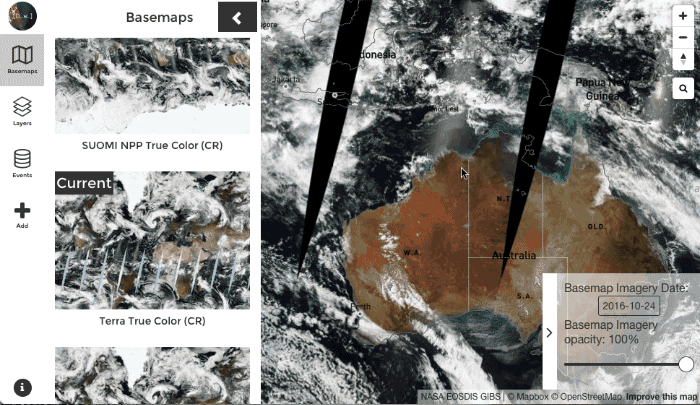
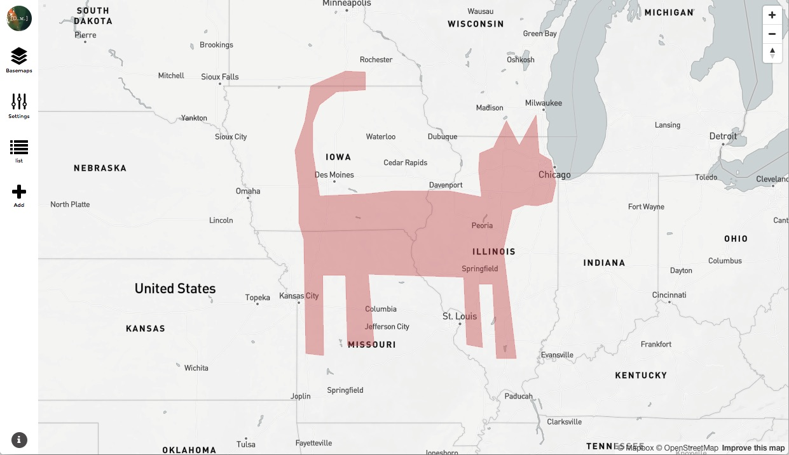

More than a year and a half ago I launched RemotePixel because I felt there was something to do to help people access and play with satellite imagery. Today I'm proud to anounce the release of DisasterWatch my lastest and most advanced project.
History
Last December I had a project idea but at this time I really though I hadn't all the knowledge and skills needed to build it by myself so I asked here for help (blog post). Sadly at that time I was waiting for the Poster project official release and also in a proccess to change job. This made me to postpone the real start for the project. After changing job again, I finally had time to work on it and with skills and knowledge learned for Satellite Search and other RemotePixel's projects I was confident for doing most of it.
Crowdsourcing disaster event
If you follow RemotePixel on twitter/facebook you may have seen that in addition of building tools I offen post satellite images over "disasters":
Possible Oil spill in Golf of Mexico #Sentinel2 image from yesterday! cc @SkyTruth pic.twitter.com/gQ0QPiNhec
— Remote Pixel (@RemotePixel) August 23, 2016
July 11th 2016 Sentinel-2 Image over Glacier Bay, AK massive landslide! pic.twitter.com/pTnHQ7el8G
— Remote Pixel (@RemotePixel) July 14, 2016
Twitter is my main source of info to find places where I should look for imagery. Usually for fire, eruptions or environmental crisis I'm trying to publish how it's look like from space with the idea of 'if people can see it, they will care about'.
In addition some websites trying to reference every natural/man-made disasters:
- http://disasterwatch.sgs-suparco.gov.pk
- http://globaldisasterwatch.blogspot.ca
- http://www.gdacs.org
- https://elispiritweaver.wordpress.com
- http://reliefweb.int/disasters
- https://geohazards-tep.eo.esa.int/#!
- ...
Trying to map every event is an impossible task... but letting people add their own event is much more easy and useful regarding user needs (event scale, location, ...).
That's the origin of the idea. I wanted a tool that able me (and anyone) to monitor event they whant, find latest images on the area and get notification when new images are available.
Landsat-8, Sentinel-2 and Sentinel-1
As usual Landsat-8/Sentinel-2 images search is based on the great sat-api by DevelopmentSeed but as a former geologist specialized in Radar Interferometry I really wanted to add the Sentinel-1 data search that could really be useful for event like earthquake, eruption or oil spill.
I'm really happy with the result and I hope you are going to love it. Use it to add event to database, simply search for images or subscribe to event to get notification of new available images.
What next
Up to now, you can search for Landsat-8 and Sentinel-2 optical images or Sentinel-1 Radar data but I'll try to add more sources in the next couple month.
If you feel there is something missing or that can be done better please create a ticket or contribute directly on Github
Thanks
Special thanks to @CodeMacabre for designing awesome icons for each event.
Another ✋ goes to Stephen Smith and the spatial community on slack for beta testing the platform.
As usual I would like also to thanks Mapbox and DevelopmentSeed for their support and help.
Links
- Date: October 2016
- Category: Monitoring / New Project